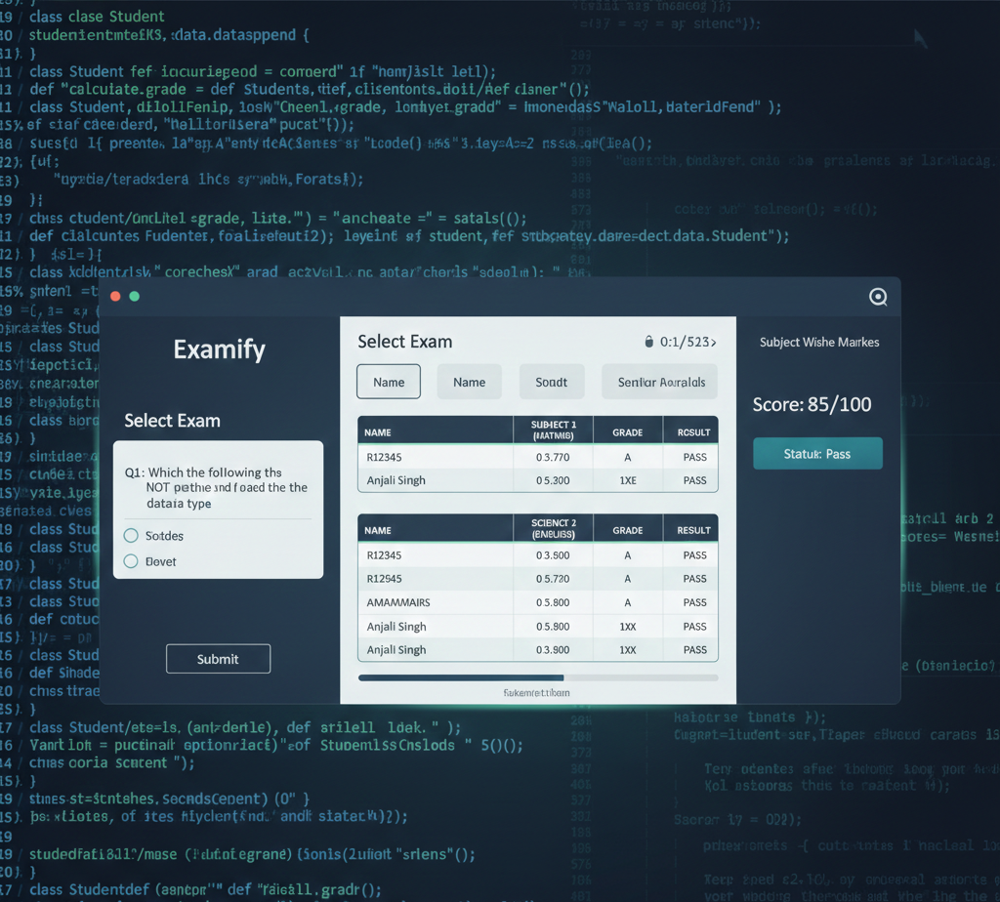
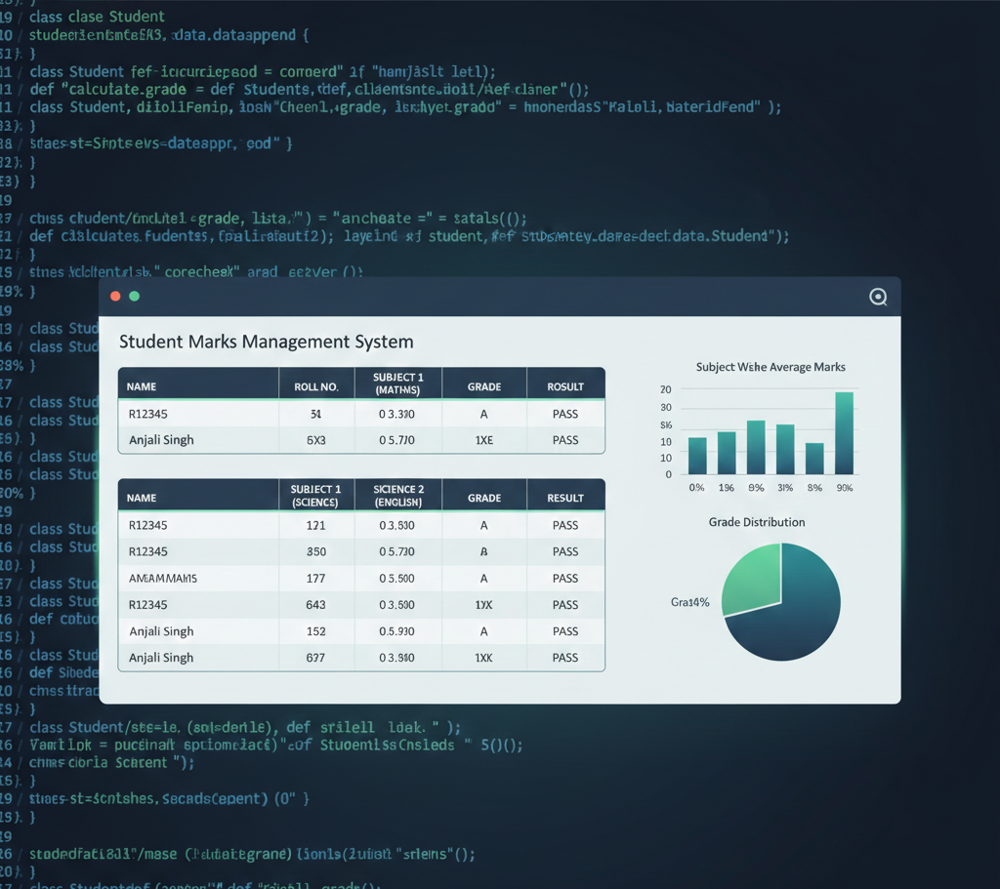
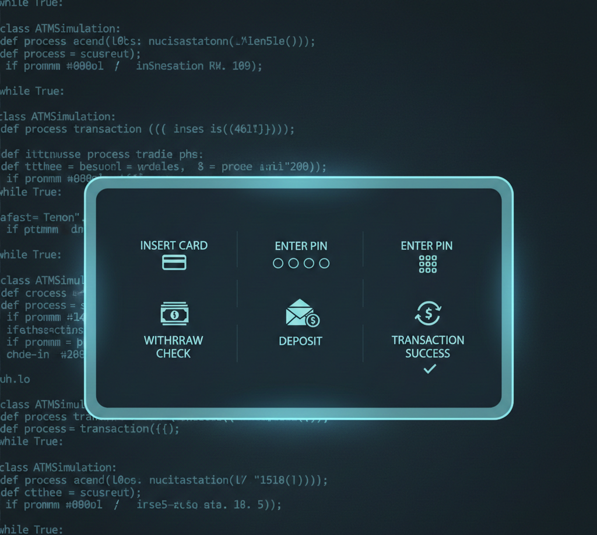

B.Sc. Computer Science graduate passionate about building automated solutions, web applications, and data-driven systems. Transforming ideas into efficient, scalable software solutions.
I am an ambitious and hard-working B.Sc. Computer Science graduate with a solid background in computer programming, database management, and software development. I am very enthusiastic about learning new technological trends and applying them to produce practical applications.
I specialize in building automated systems, web applications, and data-driven solutions. My experience includes developing full-stack applications, creating interactive dashboards, and implementing automation workflows that streamline business processes.
I am looking forward to joining an industry related to Information Technology where I can contribute effectively and keep updating my technical knowledge.
Deloitte India

A web-based application that automates the entire examination process, minimizing manual effort while providing instant results and performance analysis.

A Python-based system to efficiently store, manage, and analyze student academic records with automated calculations and reporting.

A console-based ATM simulation system that replicates basic banking operations with secure authentication and automated transaction processing.
I'm always open to discussing new projects, creative ideas, or opportunities to be part of your visions. Feel free to reach out!